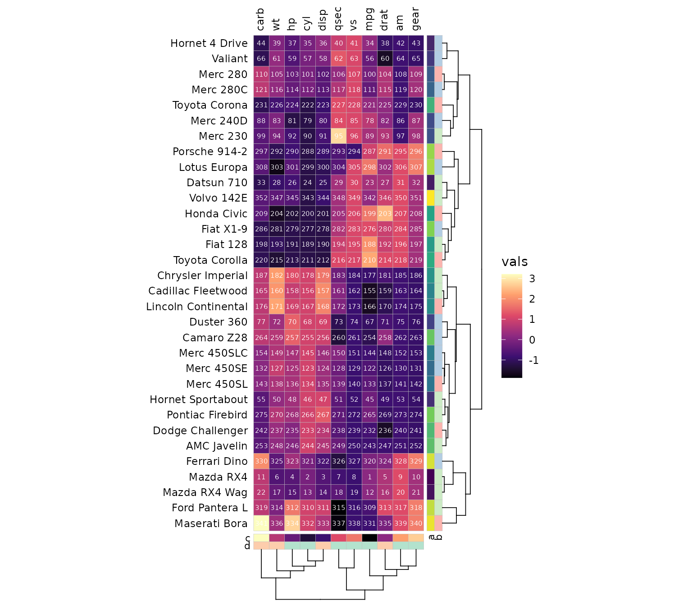
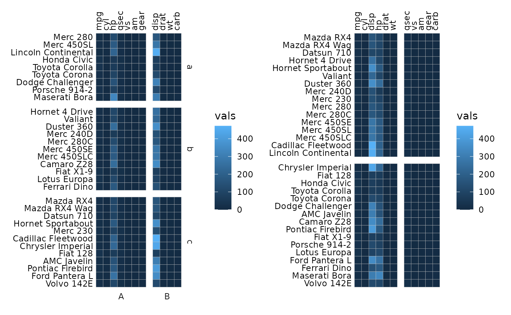
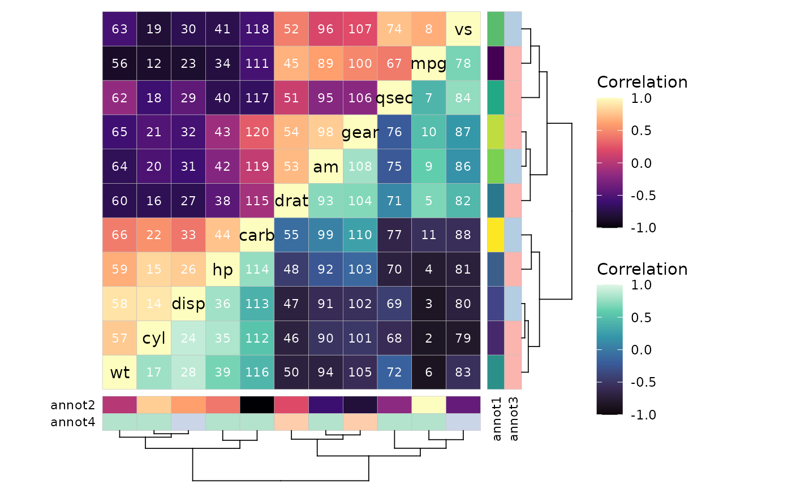
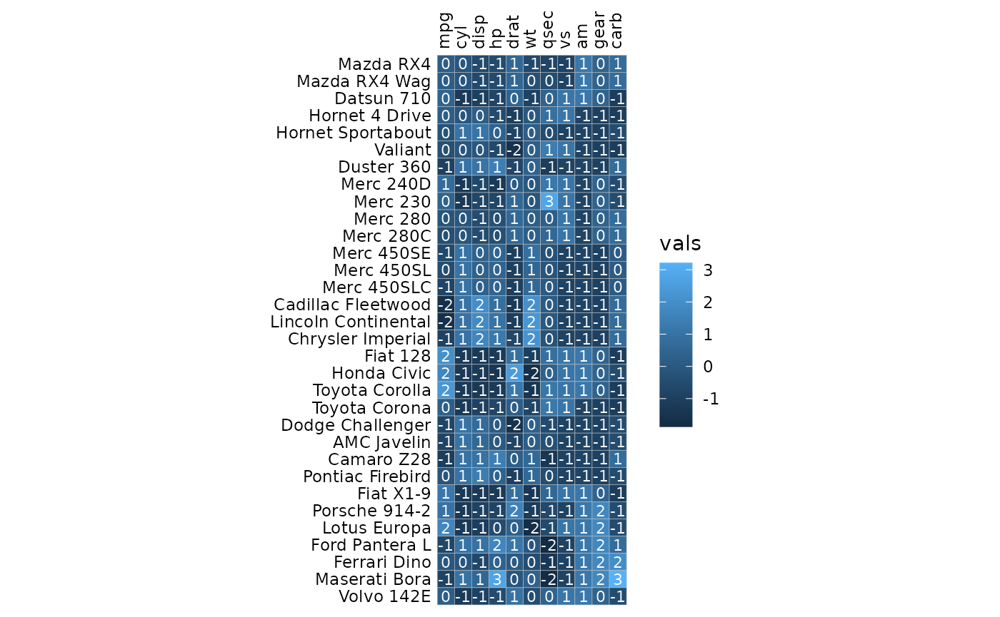
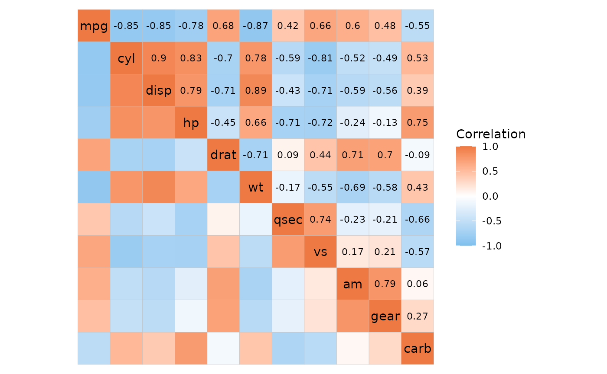
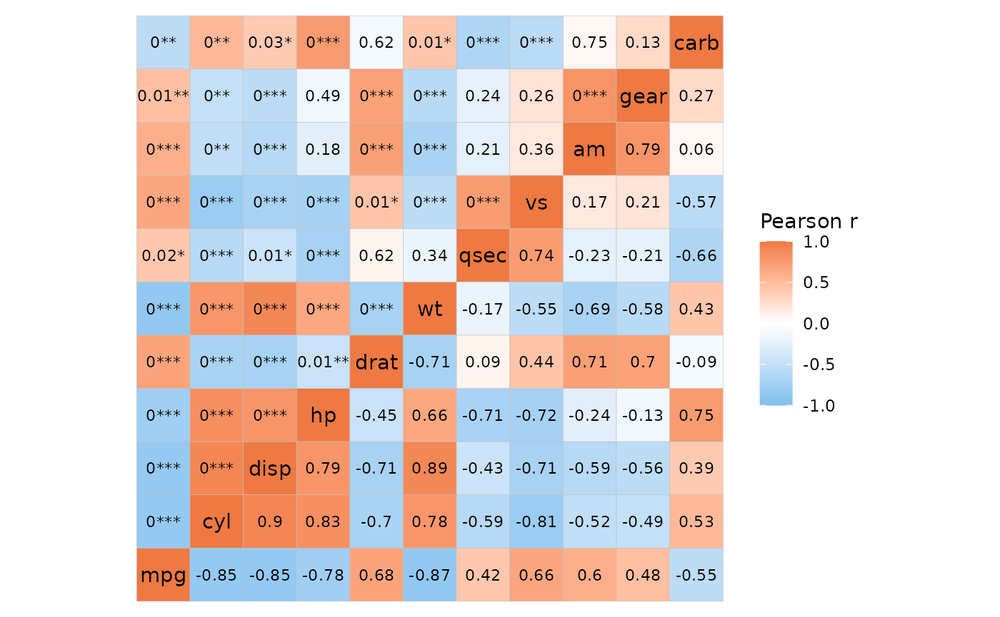
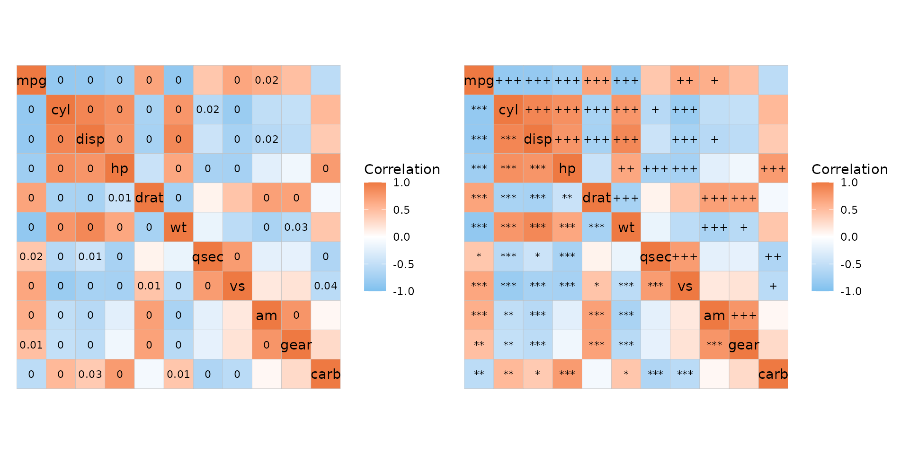

library(ggcorrheatmap)
library(dplyr)
library(tidyr) # For converting between long and wide formats
library(tibble)
library(patchwork)Data is often in long format when working with ggplot2
and other functions in the tidyverse. The
gghm_tidy() and ggcorrhm_tidy() functions
provide a way to use the heatmap plotting functionality of
ggcorrheatmap with long format data. These functions (and
this article) assume that the user is familiar with the arguments of the
non-tidy versions of the functions.
Heatmaps
# Make some long format data using functions from
# the dplyr, tidyr, tibble packages
mtcars_long <- mtcars %>%
as.data.frame() %>%
# Move rownames into a column for long format conversion
rownames_to_column("cars") %>%
pivot_longer(cols = -cars, names_to = "vars", values_to = "vals")
head(mtcars_long)
#> # A tibble: 6 × 3
#> cars vars vals
#> <chr> <chr> <dbl>
#> 1 Mazda RX4 mpg 21
#> 2 Mazda RX4 cyl 6
#> 3 Mazda RX4 disp 160
#> 4 Mazda RX4 hp 110
#> 5 Mazda RX4 drat 3.9
#> 6 Mazda RX4 wt 2.62When using gghm_tidy(), the names of the columns
containing the rows, columns, and values must be provided. These can be
unquoted, quoted, from variables, or indices.
value_column <- "vals"
# Provide column names unquoted, as index, and from variable
gghm_tidy(mtcars_long, rows = cars, cols = 2, values = !!value_column,
# gghm arguments can be used (via ...)
col_scale = "A", scale_data = "col")Columns containing annotations and cell labels can be specified in the same way.
# Make sure the annotations are unique
# (i.e. one row or column does not have two different annotation values)
set.seed(123)
row_key <- data.frame(cars = rownames(mtcars),
a = 1:nrow(mtcars),
b = sample(letters[1:3], nrow(mtcars), TRUE))
col_key <- data.frame(vars = colnames(mtcars),
c = 1:ncol(mtcars),
d = sample(LETTERS[1:2], ncol(mtcars), TRUE))
mtcars_long %>%
# Add the row and column annotations
left_join(row_key, by = "cars") %>%
left_join(col_key, by = "vars") %>%
# Add labels
mutate(labs = 1:nrow(.)) %>%
gghm_tidy(cars, vars, vals, labels = labs,
annot_rows = c(a, b), annot_col = c(c, d),
# gghm arguments
legend_order = 1, cell_label_col = "white",
cell_label_digits = 0, col_scale = "A",
scale_data = "col", cell_label_size = 2,
cluster_rows = TRUE, cluster_cols = TRUE)
When introducing gaps the facet_rows and
facet_cols arguments allow for facet membership
specification using columns in the input. It is still possible to
specify the splits with the split_rows and
split_cols arguments for the same behaviour as in
gghm().
plt1 <- mtcars_long %>%
# Use the annotations as facets
left_join(row_key, by = "cars") %>%
left_join(col_key, by = "vars") %>%
# Change facet order for rows
mutate(b = factor(b, levels = letters[1:3])) %>%
gghm_tidy(cars, vars, vals,
facet_rows = b, facet_cols = d)
plt2 <- gghm_tidy(mtcars_long,
cars, vars, vals,
split_rows = 16,
split_cols = 6)
plt1 + plt2
Correlation heatmaps
ggcorrhm_tidy() is the tidy version of
ggcorrhm(), although not all of the functionality is
available. By default, the input is assumed to contain correlation
coefficients (cor_in is TRUE). If
cor_in is FALSE the behaviour changes and some
arguments work differently.
The cor_long() function can be used to calculate
correlations from long format data. By default the output is in wide
format and can be passed to ggcorrhm().
ggcorrhm(
cor_long(mtcars_long, cars, vars, vals, out_format = "wide"),
# Specify that the input contains correlation values
cor_in = TRUE
)If desired, the correlation data can be returned in long format,
which can be given to ggcorrhm_tidy() to make a
heatmap.
mtcars_cor <- cor_long(mtcars_long, cars, vars, vals,
out_format = "long")
# Can also be done using tidyverse functions, something like
# mtcars_long %>%
# pivot_wider(id_cols = "cars", names_from = "vars", values_from = "vals") %>%
# column_to_rownames("cars") %>%
# cor() %>%
# # This part only needed if output should be long format
# as.data.frame() %>%
# rownames_to_column("row") %>%
# pivot_longer(cols = -row, names_to = "col")
head(mtcars_cor)
#> row col value
#> 1 mpg mpg 1.0000000
#> 2 cyl mpg -0.8521620
#> 3 disp mpg -0.8475514
#> 4 hp mpg -0.7761684
#> 5 drat mpg 0.6811719
#> 6 wt mpg -0.8676594
ggcorrhm_tidy(mtcars_cor, row, col, value)
It is also possible to correlate two different matrices.
# Make another long format data
iris_long <- iris %>%
# The dimensions of the two matrices must be compatible
slice(1:32) %>%
# Make unique names for the rows
mutate(Species = make.names(Species, unique = TRUE)) %>%
rename(species = Species) %>%
# Convert to long format
pivot_longer(cols = -species)
head(iris_long)
#> # A tibble: 6 × 3
#> species name value
#> <chr> <chr> <dbl>
#> 1 setosa Sepal.Length 5.1
#> 2 setosa Sepal.Width 3.5
#> 3 setosa Petal.Length 1.4
#> 4 setosa Petal.Width 0.2
#> 5 setosa.1 Sepal.Length 4.9
#> 6 setosa.1 Sepal.Width 3
# Correlate the two long format matrices
mi_cor <- cor_long(iris_long, species, name, value,
# The first one ends up in the rows and
# the second in the columns
mtcars_long, cars, vars, vals,
out_format = "long")
head(mi_cor)
#> row col value
#> 1 Sepal.Length mpg 0.000136181
#> 2 Sepal.Width mpg -0.162115780
#> 3 Petal.Length mpg 0.242985583
#> 4 Petal.Width mpg -0.052943516
#> 5 Sepal.Length cyl -0.107232949
#> 6 Sepal.Width cyl 0.166560421
ggcorrhm_tidy(mi_cor, row, col, value)
If the cor_in argument is FALSE,
ggcorrhm_tidy() will calculate the correlations instead.
Both options come with limitations.
cor_in is FALSE:
Cannot correlate two different matrices.
annot_rowsandannot_colsrequire different thinking as both will use the names from the column specified ascols.The
labelsargument works like ingghm(), taking a combination of TRUE and FALSE or a (wide format) matrix or data frame (and, additionally, NULL).
cor_in is TRUE:
Requires the correlation values to be pre-computed.
As all correlation calculations are skipped, p-values will not be computed and will also need to be calculated in advance. The
cor_long()function can help with this.The
labelsargument works like ingghm_tidy(), taking a column in the data.
# Give the non-correlation data
ggcorrhm_tidy(mtcars_long, cars, vars, vals,
cor_in = FALSE, labels = TRUE)Like with gghm_tidy(), ggcorrhm_tidy() can
take arguments from ggcorrhm() for extra customisation.
# Annotation
cor_annot <- data.frame(.names = colnames(mtcars),
annot1 = 1:11, annot2 = 11:1,
annot3 = sample(letters[1:2], 11, TRUE),
annot4 = sample(LETTERS[1:3], 11, TRUE))
mtcars_cor_extra <- mtcars_cor %>%
# Add row annotations
left_join(select(cor_annot, .names, annot1, annot3),
by = c("row" = ".names")) %>%
# Add column annotations
left_join(select(cor_annot, .names, annot2, annot4),
by = c("col" = ".names")) %>%
# Add labels
mutate(labs = 1:nrow(.))
head(mtcars_cor_extra)
#> row col value annot1 annot3 annot2 annot4 labs
#> 1 mpg mpg 1.0000000 1 a 11 A 1
#> 2 cyl mpg -0.8521620 2 a 11 A 2
#> 3 disp mpg -0.8475514 3 b 11 A 3
#> 4 hp mpg -0.7761684 4 a 11 A 4
#> 5 drat mpg 0.6811719 5 a 11 A 5
#> 6 wt mpg -0.8676594 6 a 11 A 6
ggcorrhm_tidy(mtcars_cor_extra, row, col, value,
annot_rows = c(annot1, annot3),
annot_cols = c(annot2, annot4),
labels = labs,
cluster_rows = TRUE, cluster_cols = TRUE,
layout = c("tl", "br"), mode = c("hm", "hm"),
col_scale = c("A", "G"), cell_label_col = "white",
legend_order = c(1, 2))
Cell labels and mixed layouts
When adding cell labels in gghm_tidy(), if the value
column and cell label column are the same the cell labels will be
affected by the scale_data argument.
gghm_tidy(mtcars_long, cars, vars, vals,
labels = vals, scale_data = "col",
cell_label_digits = 0, cell_label_col = "white")
It is also convenient to make conditional cell labels when the data is in long format, such as using different labels depending on the cell values.
iris_long %>%
mutate(labs = case_when(value < 1.5 ~ "-",
value > 4 ~ "+",
TRUE ~ "")) %>%
gghm_tidy(name, species, value, labels = labs,
col_scale = "A", cell_label_col = "white")When working with mixed layouts, gghm() can take care of
labelling only one half of the heatmap. Since the tidy version just uses
the values in the specified labels column, a bit more work
is required.
For convenience, the add_mixed_layout() helper function
can add a column showing which values will end up in which triangle of a
mixed layout to help with labelling cells.
# Get long format data
df_long <- sapply(seq(-1, 0, length.out = 15), function(x) {
seq(x, x + 1, length.out = 15)
}) %>% as.data.frame() %>%
`colnames<-`(1:15) %>%
rownames_to_column("a") %>%
pivot_longer(cols = -a, names_to = "b") %>%
# Add column saying which triangle each value is in
add_mixed_layout(rows = a, cols = b, values = value,
layout = c("tl", "br"))
head(df_long)
#> # A tibble: 6 × 4
#> a b value layout
#> <chr> <chr> <dbl> <chr>
#> 1 1 1 -1 tl
#> 2 1 2 -0.929 br
#> 3 1 3 -0.857 br
#> 4 1 4 -0.786 br
#> 5 1 5 -0.714 br
#> 6 1 6 -0.643 br
df_long %>%
# Add labels only for the top left part
mutate(label = if_else(layout == "tl", "+", "")) %>%
gghm_tidy(a, b, value, labels = label,
# Make sure to use the same layout as in add_mixed_layout
# to avoid confusion
layout = c("tl", "br"), mode = c("hm", "hm"),
col_scale = c("G", "A"), cell_label_col = "white")ggcorrhm_tidy() works similarly if cor_in
is TRUE. If FALSE, the labels
argument works like in ggcorrhm(), taking a wide format
matrix/data frame or a combination of TRUE and
FALSE.
# `cor_in` is `TRUE`
mtcars_cor %>%
# Add layout column
add_mixed_layout(layout = c("bl", "tr")) %>%
# Add cell labels
mutate(lab = if_else(layout == "tr", value, NA)) %>%
ggcorrhm_tidy(row, col, value, labels = lab,
cor_in = TRUE,
layout = c("bl", "tr"), mode = c("hm", "hm"))
P-values
In ggcorrhm_tidy(), if cor_in is
FALSE, the p_values argument works like in
ggcorrhm() and can deal with mixed layouts.
ggcorrhm_tidy(mtcars_long, cars, vars, vals, cor_in = FALSE,
layout = c("tl", "br"), mode = c("hm", "hm"),
labels = TRUE, p_values = c(TRUE, FALSE),
# P-values top left, correlation values bottom right
cell_label_p = c(TRUE, FALSE))
If cor_in is TRUE, the labels are drawn
directly from a column in the data, which means that the labels have to
be made in advance. To help with this, the cor_long
function has some extra p-value functionality.
mtcars_long %>%
cor_long(cars, vars, vals,
out_format = "long",
p_values = TRUE,
# Multiple testing adjustment
p_adjust = "bonferroni",
# Thresholds for symbols based on adjusted p-values
p_thresholds = c("***" = 0.001, "**" = 0.01, "*" = 0.05, 1),
# 'p_sym_add' takes a column and adds to the symbols for quick combining
# One of 'values', 'p_val', and 'p_adj'
p_sym_add = "value",
# 'p_sym_digits' changes the number of decimals
# displayed in the p_sym
p_sym_digits = 1) %>%
# The output contains the columns 'row', 'col', 'value',
# 'p_val', 'p_adj', and 'p_sym'
ggcorrhm_tidy(row, col, value, labels = p_sym)Combine this with add_mixed_layout for more control in
mixed layouts. Below is an example of showing unadjusted and adjusted
p-values in different triangles of the heatmap.
plt_dat <- mtcars_long %>%
# Add p-values
cor_long(cars, vars, vals, out_format = "long",
p_values = TRUE, p_adjust = "bonferroni") %>%
# Add layout
add_mixed_layout(layout = c("tr", "bl"))
plt1 <- plt_dat %>%
# Make custom labels with adjusted p-values in the
# top right and unadjusted in the bottom left
# but only display if < 0.05
mutate(labs = case_when(layout == "tr" & p_adj < 0.05 ~ round(p_adj, 2),
layout == "bl" & p_val < 0.05 ~ round(p_val, 2),
TRUE ~ NA)) %>%
ggcorrhm_tidy(row, col, value, labels = labs,
cor_in = TRUE)
plt2 <- plt_dat %>%
# Make symbol labels instead
mutate(p_star = as.character(symnum(p_val, c(0, 0.001, 0.01, 0.05, 1),
c("***", "**", "*", ""))),
p_adj_star = as.character(symnum(p_adj, c(0, 0.001, 0.01, 0.05, 1),
c("+++", "++", "+", ""))),
labs = case_when(layout == "tr" & p_adj < 0.05 ~ p_adj_star,
layout == "bl" & p_val < 0.05 ~ p_star,
TRUE ~ "")) %>%
ggcorrhm_tidy(row, col, value, labels = labs,
cor_in = TRUE)
plt1 + plt2